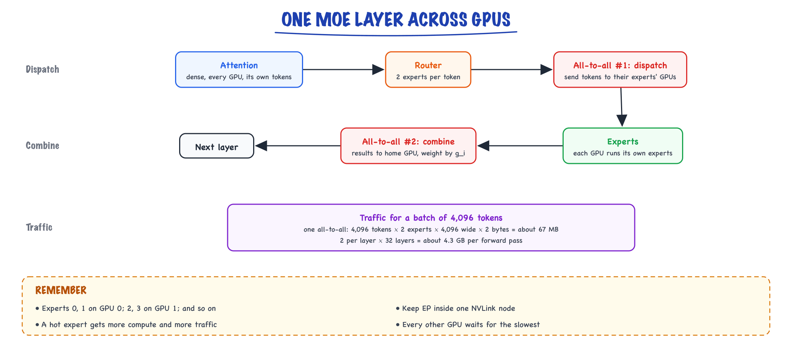

Mixture of experts // Inference & serving
Sparse experts and routers: more parameters for the same compute, and what it costs at serving time.
01 — At a glance
Sparse MoE transformers activate a subset of feed-forward “experts” per token via a learned router — massive total parameters with lower compute per forward pass. Mixtral, DeepSeek-MoE, and GPT-4 rumors; serving challenges include expert parallelism and load imbalance.

MoE layer replaces dense FFN with N expert FFNs + router. Each token selects top-k experts (often k=2). Total params = all experts; active params per token ≈ k/N of expert pool + shared attention weights.

Routing zoom: per-token gate vector, top-2 selection, auxiliary load-balancing loss during training. Sticky note: Mixtral 8×7B activates ~13B of ~47B params per token.

Serving zoom: GPU0 holds experts 0–3, GPU1 holds 4–7; router on attention GPU sends token batches via NCCL all-to-all. Hot expert = straggler; mitigations: expert replication, capacity buffers.
02 — New words
| Word | Meaning |
|---|---|
| Feed-forward network (FFN) | The per-token two-layer network inside every transformer block, after attention. It holds most of a dense model's parameters. |
| Expert | One of several independent FFNs that replace the single FFN in an MoE layer. Same shape as a normal FFN. |
| Router (gate) | A small linear layer that scores every expert for each token and decides which experts process it. |
| Top-\(k\) routing | Each token is sent to the \(k\) experts with the highest router scores; their outputs are mixed by the renormalised scores. |
| Total parameters | Every weight in the model, all experts included. Sets the memory needed to hold it. |
| Active parameters | The weights one token actually uses: shared layers plus its \(k\) experts. Sets the compute per token. |
| Load balancing loss | An extra training loss that is smallest when tokens are spread evenly across experts. |
| Expert collapse | The router sending most tokens to a few experts, so the others stop learning. |
| Capacity factor | How many token slots each expert gets per batch, as a multiple of a perfectly even share. |
| Token dropping | Skipping the expert computation for tokens that arrive after their expert is full; they pass through on the residual path. |
| Expert parallelism (EP) | Placing different experts on different GPUs and sending each token to wherever its experts live. |
| All-to-all | A collective operation in which every GPU sends a different chunk of data to every other GPU. EP uses two per MoE layer. |
| Shared expert | An expert that processes every token, alongside the routed ones, to hold common knowledge. |
| Routing | Classifier sends input to a specialized branch/model. |
The lesson
03 — The question
Bigger models know more, but in a dense transformer every parameter is used for every token: doubling the parameters doubles the compute per token, in training and at inference. A mixture of experts (MoE) breaks that link. It keeps many sets of FFN weights but uses only a few of them for each token, so the model can hold far more parameters than it spends compute on.
That trade, more memory for less compute, shapes everything about MoE models: how they are trained, why they need special care to stay balanced, and why serving them is easy in one way and hard in another. The interview questions:
- What does "47B total, 13B active" mean, and which number determines cost?
- How does the router choose experts, and what stops it from sending everything to one?
- What does MoE change at serving time, in memory, speed and hardware?
- When would you choose an MoE model over a dense one?
Running example. A model shaped like Mixtral 8x7B, whose dimensions are public: 32 layers, hidden size 4,096, an FFN inner size of 14,336 using a SwiGLU FFN (three weight matrices), 8 experts per layer with top-2 routing, grouped-query attention with 8 KV heads, and a 32,000-token vocabulary. We will count its parameters, route a token through it, train its router, and serve it on H100 80 GB GPUs.
04 — Step 1: where a transformer's parameters live
Each transformer block has two parts: attention, which mixes information between tokens, and the FFN, which transforms each token's vector on its own (see Transformers & attention). Count them for one block of our model:
- Attention: query and output projections of \(4{,}096 \times 4{,}096\) each, and key and value projections of \(4{,}096 \times 1{,}024\) each (GQA): about 41.9M parameters.
- FFN (SwiGLU): three matrices of \(4{,}096 \times 14{,}336\): about 176.2M parameters.
The FFN is four times larger than attention. In a dense version of this model (one FFN per layer), FFNs hold about 78% of all parameters. They are also where much of the model's stored knowledge appears to live: probing studies find facts associated with specific FFN neurons. So the FFN is the natural place to add capacity, and the place where making each token use only part of the weights saves the most.
05 — Step 2: the idea, conditional computation
An MoE layer replaces the single FFN with \(E\) expert FFNs plus a router. For each token, the router picks \(k\) experts; only those run. The layer's output is the weighted sum of their outputs:
\[ y = \sum_{i \in \text{top-}k} g_i \, \text{FFN}_i(x) \]where \(x\) is the token's vector and \(g_i\) is the router's weight for expert \(i\). Attention, embeddings and normalisation stay dense and shared.
Counting with \(E = 8\), \(k = 2\):
| Per layer | 32 layers | |
|---|---|---|
| Experts held | 8 × 176.2M = 1.41B | 45.1B |
| Experts used per token | 2 × 176.2M = 352M | 11.3B |
| Attention + router (always used) | 41.9M + 33K | 1.34B |
| Embeddings and output head | 2 × 32,000 × 4,096 = 0.26B | |
Total: 46.7B parameters. Active per token: 12.9B. The name "8x7B" suggests 56B; it is less because only the FFNs are multiplied by eight, and attention and embeddings are shared.
The consequence is the whole point. A forward pass costs about 2 FLOPs per active parameter per token, so this model computes like a 13B dense model (about 26 GFLOPs per token) while holding the parameters of a 47B one. Published MoE results consistently report that, for the same training compute, sparse models reach a given quality sooner than dense ones; that is why many recent frontier and open models use MoE.
06 — Step 3: the router, worked for one token
The router is a single matrix \(W_g\) of size \(4{,}096 \times 8\): it turns a token's vector into 8 scores (logits), one per expert. Suppose a token in a block of Python code gets these logits:
| Expert | 0 | 1 | 2 | 3 | 4 | 5 | 6 | 7 |
|---|---|---|---|---|---|---|---|---|
| Logit | 2.1 | 0.3 | −0.5 | 1.4 | 0.0 | −1.2 | 0.8 | −0.3 |
| Softmax | 0.443 | 0.073 | 0.033 | 0.220 | 0.054 | 0.016 | 0.121 | 0.040 |
Top-2 picks experts 0 and 3. Their probabilities are renormalised over the chosen pair: \(0.443 / (0.443 + 0.220) = 0.668\) and \(0.332\). The token's FFN output is \(0.668 \times \text{FFN}_0(x) + 0.332 \times \text{FFN}_3(x)\). Experts 1, 2, 4, 5, 6 and 7 never see this token, and their weights are not used for it.
Three design points hide in this small calculation:
- Why \(k = 2\), not 1? With \(k = 1\) (Switch Transformer style), each token gets one expert's view and the router's choice is all-or-nothing. With two, the output blends two experts and the router gets a gradient signal about the relative merit of both. More experts per token means more compute, so \(k\) is a quality-versus-cost knob.
- How does the router learn? The gate weights \(g_i\) multiply the expert outputs, so the loss gradient flows into the router through them. The top-\(k\) selection itself is not differentiable; the router learns only from the experts it picked.
- Specialisation is not by topic. Analyses of trained MoE models find experts specialise more by token type and syntax (punctuation, indentation, certain word pieces) than by human topics like "biology" or "law". "The maths expert" is mostly a myth.
07 — Step 4: why routers collapse, and the balancing loss
Start training with a random router. By chance, some experts get slightly more tokens; they learn faster; they become better; the router learns to send them even more tokens. This rich-get-richer loop ends in expert collapse: two experts do all the work and six are dead weight. You have paid for 46.7B parameters and are using a fraction of them.
The standard fix is an auxiliary load balancing loss added to the language-model loss. In the Switch Transformer form:
\[ \mathcal{L}_{\text{aux}} = \alpha \cdot E \sum_{i=1}^{E} f_i \, P_i \]Here \(f_i\) is the fraction of token assignments that went to expert \(i\) in the batch, \(P_i\) is the average router probability given to expert \(i\), and \(\alpha\) is a small weight (around 0.01). \(f_i\) is a count and has no gradient; \(P_i\) does, so the loss pushes probability away from experts that are already receiving many tokens. When routing is perfectly even, \(f_i = P_i = 1/E\) and the sum times \(E\) equals exactly 1. Any imbalance makes it larger.
The code at the end routes 2,048 random tokens through 8 experts. With a fresh router the loads are roughly even (446 to 587 assignments per expert) and the balance term is 1.0. Bias the router toward experts 0 and 3 and all 2,048 tokens go to those two; the term rises to 3.44, and its gradient pushes the router back.
The weight \(\alpha\) is a real trade-off: too small and collapse wins, too large and the router is forced toward uniform, random-looking routing that ignores which expert actually suits the token. Later designs add a router z-loss that penalises very large router logits (it keeps training numerically stable) and some replace the auxiliary loss with per-expert bias terms adjusted directly from observed load, so balancing no longer competes with the language-model objective.
08 — Step 5: capacity, and what happens to overflow
Hardware wants fixed-size work. In training, each expert is given a fixed buffer of token slots per batch:
\[ \text{capacity} = \text{capacity factor} \times \frac{T \times k}{E} \]for a batch of \(T\) tokens. With \(T = 4{,}096\), \(k = 2\) and \(E = 8\), a perfectly even split gives each expert 1,024 tokens. A capacity factor of 1.25 gives each 1,280 slots, a 25% margin for imbalance.
If the router sends 1,500 tokens to one expert, 220 overflow. Those tokens are dropped for that expert: they skip its computation and continue through the residual connection unchanged, which slightly hurts their representation. The capacity factor is therefore a direct trade between wasted compute (empty slots when the factor is high) and dropped tokens (when it is low). In the collapsed case from Step 4, scaled to this batch, each of the two hot experts would receive 4,096 assignments for 1,280 slots and drop more than two-thirds of them, which is another reason collapse is so damaging.
Inference engines generally avoid dropping (dropless MoE), using variable-size grouped matrix multiplications instead of fixed buffers, because silently changing a user's output based on who else is in the batch is unacceptable.
09 — Step 6: expert parallelism and the all-to-all
Our model's experts alone are about 90 GB in BF16 (45.1B parameters × 2 bytes), and frontier MoE models are many times larger. The natural way to spread them is expert parallelism: put experts 0 and 1 on GPU 0, 2 and 3 on GPU 1, and so on. Each MoE layer then becomes a communication pattern:

With expert parallelism every MoE layer is two all-to-all exchanges: dispatch each token to the GPUs holding its experts, then combine the results back on its home GPU.
The traffic is easy to estimate. For a batch of 4,096 tokens, each sent to 2 experts, with 4,096-wide BF16 vectors, one all-to-all moves about \(4{,}096 \times 2 \times 4{,}096 \times 2\) bytes ≈ 67 MB. Two per layer across 32 layers is about 4.3 GB per forward pass. Inside one NVLink-connected server that is manageable; across servers on a slower network it can dominate the step time. That is why EP is usually kept within a node or paired with fast interconnects, and why an imbalanced router hurts twice: the GPU holding a hot expert has more compute and receives more traffic, and every other GPU waits for it.
EP combines with the other parallelism axes (data, tensor, pipeline) covered in GPUs & distributed training.
10 — Step 7: serving an MoE model
At inference, MoE splits the two resources that a dense model ties together.
Memory follows total parameters. All 46.7B parameters must be resident, because any token may pick any expert. In BF16 that is about 93 GB, more than one 80 GB H100. Options: two GPUs (tensor or expert parallel), 8-bit weights (about 47 GB, fits one GPU with room for the KV cache), or 4-bit. For memory planning, an MoE model is as big as its total parameter count says.
Compute follows active parameters. Prefill, which is compute-bound, costs about 26 GFLOPs per token, the same as a 13B dense model and about 3.6 times less than a dense 47B model.
Decode bandwidth depends on the batch. Decode is memory-bound (see Inference internals): its speed is set by bytes read per step. At batch 1, each layer reads only the 2 chosen experts, about 26 GB in all, so a step takes about 7.7 ms at 3.35 TB/s, against about 28 ms for a dense 47B model. But a batch of tokens picks experts independently. If routing were uniform, the expected number of distinct experts touched per layer is \(8\big(1 - (6/8)^B\big)\) for a batch of \(B\) tokens:
| Batch | 1 | 4 | 8 | 16 | 64 |
|---|---|---|---|---|---|
| Experts read per layer | 2.0 | 5.5 | 7.2 | 7.9 | 8.0 |
By batch 16, nearly every expert is read every step, so a decode step reads almost all 93 GB, like a dense 47B model. (Real routing is skewed and correlated, so the numbers are somewhat lower, but the shape holds.) The sparsity saving in bandwidth disappears exactly where serving economics live, at large batches. What remains is the compute saving, which matters once the batch is large enough to be compute-bound.
So the honest summary: an MoE model needs the memory of its total size, runs single-user decode at roughly the speed of its active size, and runs large-batch decode at a bandwidth cost close to its total size but a compute cost of its active size. It is excellent on a big, well-utilised fleet and awkward on a single small GPU.
12 — Choosing MoE or dense
| Situation | Leans toward | Why |
|---|---|---|
| High-throughput serving on a multi-GPU node | MoE | Large batches use the compute saving; memory is available. |
| Single 24 to 48 GB GPU, one user at a time | Dense (quantized) | An MoE's total size may not fit; the bandwidth advantage at batch 1 is lost if you must offload experts. |
| Training a model from scratch on a fixed compute budget | MoE, if you have the engineering | Better quality per training FLOP; harder to train stably and to parallelise. |
| Fine-tuning for a narrow task | Either; dense is simpler | MoE fine-tuning works but routing can shift and overfit; LoRA tooling is more mature for dense. |
| Strict latency for single requests on modest hardware | Dense of similar active size | Same compute, a fraction of the memory, no routing overhead. |
When someone quotes an MoE model, translate immediately: total parameters tell you the GPUs needed to hold it; active parameters tell you the cost per token once it is held.
13 — In code: a top-2 MoE layer you can inspect
A complete MoE layer in numpy: router, top-2 selection, renormalised gates, per-expert computation on only its tokens, and the balance loss. The second call adds a bias that makes the router collapse onto experts 0 and 3.
import numpy as np rng = np.random.default_rng(0) T, d, ff, E, k = 2048, 16, 64, 8, 2 # tokens, width, expert width, experts, top-k x = rng.normal(size=(T, d)) experts = [(rng.normal(size=(d, ff)) / d**0.5, rng.normal(size=(ff, d)) / ff**0.5) for _ in range(E)] def moe(x, Wg, bias=0.0): logits = x @ Wg + bias # (T, E) router scores probs = np.exp(logits - logits.max(1, keepdims=True)) probs /= probs.sum(1, keepdims=True) top = np.argsort(-logits, axis=1)[:, :k] # each token's k best experts gate = np.take_along_axis(probs, top, 1) gate /= gate.sum(1, keepdims=True) # renormalise over the chosen k out = np.zeros_like(x) for e, (W1, W2) in enumerate(experts): # each expert sees only its tokens rows, slot = np.nonzero(top == e) h = np.maximum(x[rows] @ W1, 0) @ W2 out[rows] += gate[rows, slot, None] * h f = np.bincount(top.ravel(), minlength=E) / (T * k) # share of assignments per expert P = probs.mean(0) # mean router probability per expert aux = E * np.sum(f * P) # Switch-style balance loss (1.0 = perfect) return out, np.bincount(top.ravel(), minlength=E), aux Wg = rng.normal(size=(d, E)) * 0.1 _, load, aux = moe(x, Wg) print("balanced router loads", load, "aux", round(aux, 2)) _, load, aux = moe(x, Wg, bias=np.array([3.0, 0, 0, 3.0, 0, 0, 0, 0])) print("collapsed router loads", load, "aux", round(aux, 2)) print("capacity per expert at factor 1.25:", int(1.25 * T * k / E))
Output: balanced loads between 446 and 587 with a balance term of 1.0; collapsed loads of 2,048 on experts 0 and 3 and zero elsewhere, balance term 3.44; a capacity of 640 slots per expert, so in the collapsed case each hot expert would drop 1,408 tokens.
And the parameter and bandwidth arithmetic from Steps 2 and 7:
from math import comb def moe_params(d=4096, ff=14336, layers=32, experts=8, k=2, kv_dim=1024, vocab=32000): expert = 3 * d * ff # SwiGLU: gate, up and down matrices attn = 2 * d * d + 2 * d * kv_dim # q, o full width; k, v grouped shared = layers * (attn + d * experts) + 2 * vocab * d return shared + layers * experts * expert, shared + layers * k * expert total, active = moe_params() print(f"total {total/1e9:.1f}B, active {active/1e9:.1f}B per token") print(f"BF16 weights {2*total/1e9:.0f} GB to hold, {2*active/1e9:.0f} GB touched per token") def experts_touched(batch, experts=8, k=2): """Expected distinct experts per layer if each token picks k of E uniformly.""" miss = comb(experts - 1, k) / comb(experts, k) # P(a given expert unused by one token) return experts * (1 - miss ** batch) for b in (1, 4, 8, 16, 64): print(f"batch {b:3d}: {experts_touched(b):.2f} of 8 experts read per layer")
It prints 46.7B total and 12.9B active, 93 GB to hold and 26 GB touched per token, and the experts-per-layer row of the table in Step 7.
Quick reference
14 — What & Why
Problem: Scaling dense LLMs hits diminishing returns — every token activates all FFN parameters. MoE increases model capacity (more specialists) without proportional FLOPs per token.
Functional
- Higher quality per inference dollar for open models (Mixtral 8×7B)
- Specialized sub-networks may emerge (code vs math routing)
- Enables 100B+ total params on consumer GPU clusters for active 10–20B
Non-Functional
- Memory: must store ALL experts on disk/GPU pool even if sparse activate
- Load balance: router collapse starves some experts
- Communication: expert parallelism needs all-to-all GPU transfers
- Determinism: routing adds variance run-to-run at same temperature
Interview anchor: MoE trades parameter count for conditional computation — “47B total, 13B active” is the headline metric interviewers expect you to parse.
15 — Core Concepts
| Term | Definition | Gotcha |
|---|---|---|
| Expert | Standalone FFN sub-network in a layer | Each expert is full-sized (e.g. 7B shard in 8×7B) |
| Router / gate | Linear layer → softmax over experts per token | Can collapse to always pick same experts |
| Top-k routing | Activate k experts (typically 2) per token | Output = weighted sum of expert outputs |
| Active params | Params actually used in one forward pass | ≠ total params; drives inference FLOPs |
| Total params | Sum of all experts + shared layers | VRAM for weights scales with total |
| Load balancing loss | Auxiliary loss encouraging uniform expert usage | Too strong → hurts quality; too weak → dead experts |
| Expert parallelism | Shard experts across GPUs; route tokens remotely | All-to-all bandwidth bottleneck |
| Shared attention | Attention layers usually dense, shared | MoE typically replaces FFN blocks only |
16 — Serving View (Not a Public API)
MoE is a model architecture, not an API protocol. Consumers see the same chat completion interface; routing is internal.
# vLLM / TGI serve Mixtral like any model
python -m vllm.entrypoints.openai.api_server \
--model mistralai/Mixtral-8x7B-Instruct-v0.1 \
--tensor-parallel-size 4 \
--max-model-len 32768
# OpenAI-compatible client — MoE invisible
client.chat.completions.create(
model="mixtral-8x7b",
messages=[{"role":"user","content":"Explain sparse MoE routing."}],
)
Serving internals differ: expert placement, all-to-all kernels. See Serving & scaling (catalog) and What an LLM is for inference basics.
17 — When to Use / When NOT
| Scenario | MoE? | Alternative |
|---|---|---|
| Self-host best open quality/$ on 4×A100 | Yes | Mixtral, DeepSeek-MoE |
| Minimal VRAM single GPU (24GB) | Hard | Dense 7B/8B quantized |
| Deterministic compliance outputs | Careful | Dense + low temperature; test routing variance |
| Training your own from scratch | Expert only | Needs huge infra; buy API instead |
| Latency-sensitive single-stream | Maybe worse | Routing + comm overhead vs dense 8B |
18 — Architecture
Token x ──► Multi-Head Attention (dense, shared)
│
▼
Router(x) ──► softmax ──► top-k expert indices
│
┌───────────┼───────────┐
▼ ▼ ▼
Expert_1 Expert_2 Expert_N (sparse: only k evaluated)
│ │ │
└───────────┴───────────┘
│
weighted sum ──► next layer
19 — Deep Dive: Routing & Gating
# Conceptual top-2 routing (PyTorch-style pseudo)
router_logits = x @ W_gate # [batch, seq, num_experts]
probs = softmax(router_logits, dim=-1)
topk_weights, topk_ids = topk(probs, k=2, dim=-1)
output = 0
for i in range(k):
expert_out = experts[topk_ids[..., i]](x)
output += topk_weights[..., i:i+1] * expert_out
Failure modes
- Expert collapse: router always picks expert 3 — others untrained
- Token dropping: some implementations drop overflow tokens under load
- Load imbalance: hot experts saturate GPU; cold experts idle
20 — Deep Dive: Training MoE
- Auxiliary loss: encourage uniform expert utilization (Switch Transformer)
- Capacity factor: buffer per expert; overflow tokens dropped or rerouted
- Z-loss on router: stabilize logit magnitudes (ST-MoE)
- Expert count: more experts → harder load balance, better specialization potential
Training MoE at frontier scale is cluster-scale engineering — interview as concept, not something most teams run.
21 — Deep Dive: Model Families
| Model | Experts | Active / Total | Notes |
|---|---|---|---|
| Mixtral 8×7B | 8 FFN experts, top-2 | ~13B / ~47B | Apache 2.0; popular self-host |
| DeepSeek-MoE | Fine-grained experts | High sparsity | Strong open benchmarks |
| Switch Transformer | top-1 routing | Research baseline | Google; capacity factor concept |
| GPT-4 (rumored) | Undisclosed MoE | — | Industry assumes MoE at scale |
22 — Deep Dive: Inference Serving
- Expert parallelism: shard experts across GPUs; dispatch tokens via all-to-all
- Tensor parallelism: within large expert FFN
- Quantization: AWQ/GPTQ on experts separately; watch routing accuracy
- Batching: continuous batching still applies; uneven expert load hurts tail latency
More detail
23 — Recap
Replace the single FFN with E expert FFNs and a learned router that sends each token to the top-k (often 2, or 8 of 256 in very sparse designs). Total parameters grow (knowledge capacity) while active parameters per token stay small (compute). Mixtral 8×7B: ~47B total, ~13B active. DeepSeek-V3, Qwen-MoE and others push this further.
Costs: all experts must sit in memory, load balancing needs an auxiliary loss, and distributed training needs expert parallelism (all-to-all communication).
In production
24 — Production & Ops
Monitoring
- Per-expert utilization histogram (detect collapse)
- All-to-all latency percentiles
- Active vs total param memory footprint
When MoE hurts
- Small batch single-user: routing overhead dominates
- Insufficient GPUs: can't fit all experts
26 — Where people get lost
- Confusing total params with inference cost: bill FLOPs on active params
- Undersized GPU fleet: all experts must be resident somewhere
- Ignoring router variance: same prompt can hit different experts
- No load balance monitoring in prod: silent quality drift as experts die
- "8x7B means eight 7B models, 56B in total." Only the FFNs are replicated; attention and embeddings are shared. The total is 46.7B.
- "An MoE model is as cheap to host as its active size." Memory is set by total parameters. A 47B-total model needs 47B parameters resident, whatever fraction each token uses.
- "MoE makes decode 3.6 times faster." Only at very small batch. With a few dozen sequences in a batch, nearly every expert is read every step, and bandwidth cost approaches the total size.
- "Each expert is a domain specialist." Specialisation is mostly by token type and syntax, not by subject. Do not design systems that assume a "legal expert".
- "The balancing loss is a minor detail." Without it, training collapses onto a few experts; with too much of it, routing becomes uniform and useless. Its weight is a first-order hyperparameter.
- "Token dropping happens at inference." Dropping is a training-time capacity device. Serving engines run dropless so outputs do not depend on who else is in the batch.
- "MoE is a different kind of model to call." To an API caller it is identical to a dense model. The differences are entirely in training and serving.
27 — How this connects
Builds on
- What an LLM is — A next-token predictor, the language-modeling objective, model families and scaling laws.
- Transformers & attention — Embeddings, attention, multi-head and GQA, RoPE, the block, a mini-GPT, FLOPs and FlashAttention.
- Inference internals — Prefill vs decode, the KV cache, PagedAttention, continuous batching and speculative decoding.
- Serving & scaling — vLLM and Ollama, benchmarking honestly, a production serving setup and scaling it.